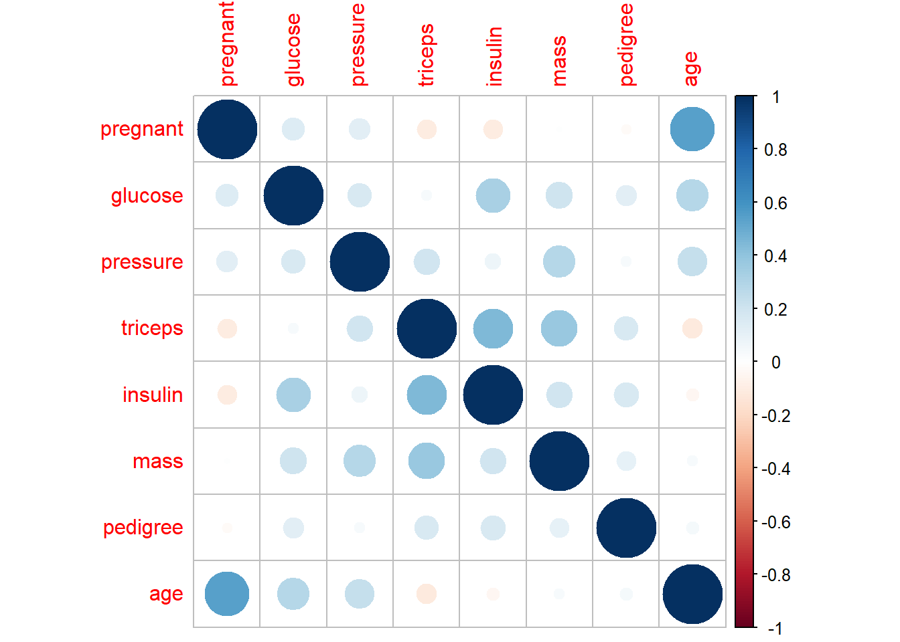
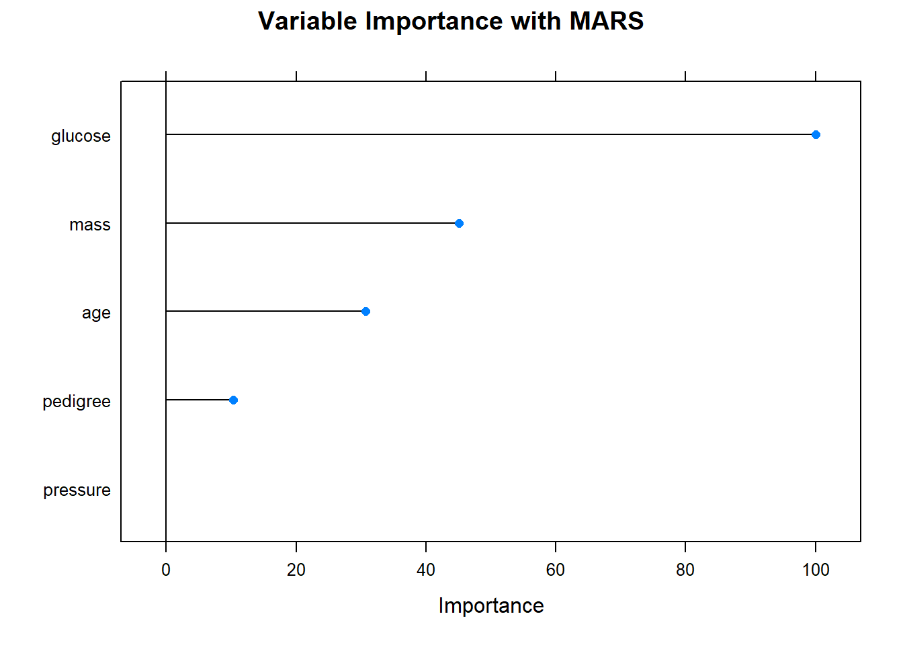
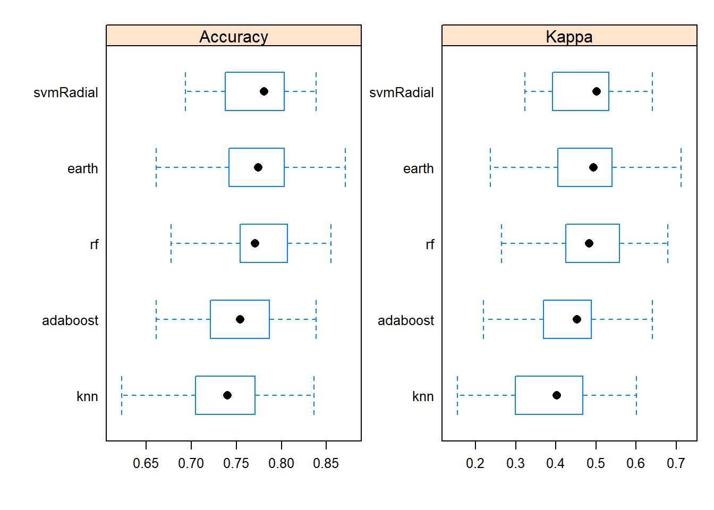
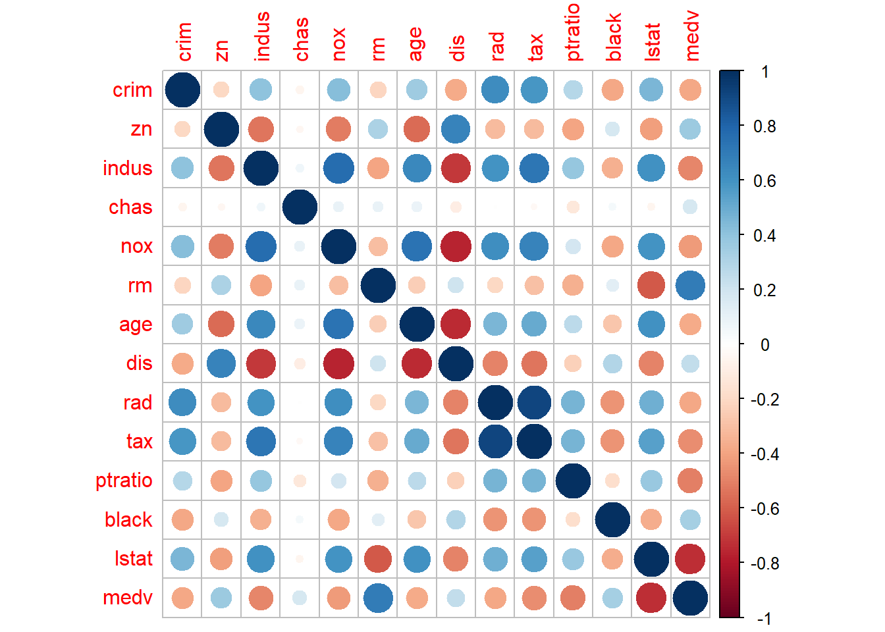

2 Machine learning
2.1 Machine learning workflow
2.1.1 Loading packages and datasets
# load the Pima Indians dataset from the mlbench dataset
library(mlbench)
data(PimaIndiansDiabetes)
# rename dataset to have shorter name because lazy
diabetes <- PimaIndiansDiabetes- look at the data set
# install.packages(c('caret', 'skimr', 'RANN', 'randomForest', 'fastAdaboost', 'gbm', 'xgboost', 'caretEnsemble', 'C50', 'earth'))
# Load the caret package
library(caret)## Loading required package: lattice##
## Attaching package: 'caret'## The following object is masked from 'package:purrr':
##
## lift# Structure of the dataframe
str(diabetes)## 'data.frame': 768 obs. of 9 variables:
## $ pregnant: num 6 1 8 1 0 5 3 10 2 8 ...
## $ glucose : num 148 85 183 89 137 116 78 115 197 125 ...
## $ pressure: num 72 66 64 66 40 74 50 0 70 96 ...
## $ triceps : num 35 29 0 23 35 0 32 0 45 0 ...
## $ insulin : num 0 0 0 94 168 0 88 0 543 0 ...
## $ mass : num 33.6 26.6 23.3 28.1 43.1 25.6 31 35.3 30.5 0 ...
## $ pedigree: num 0.627 0.351 0.672 0.167 2.288 ...
## $ age : num 50 31 32 21 33 30 26 29 53 54 ...
## $ diabetes: Factor w/ 2 levels "neg","pos": 2 1 2 1 2 1 2 1 2 2 ...# See top 6 rows
head(diabetes )## pregnant glucose pressure triceps insulin mass pedigree age diabetes
## 1 6 148 72 35 0 33.6 0.627 50 pos
## 2 1 85 66 29 0 26.6 0.351 31 neg
## 3 8 183 64 0 0 23.3 0.672 32 pos
## 4 1 89 66 23 94 28.1 0.167 21 neg
## 5 0 137 40 35 168 43.1 2.288 33 pos
## 6 5 116 74 0 0 25.6 0.201 30 neg2.1.2 Spliting the dataset into training and test data sets
# Create the training and test datasets
set.seed(100)
# Step 1: Get row numbers for the training data
trainRowNumbers <- createDataPartition(diabetes$diabetes, p=0.8, list=FALSE)
# Step 2: Create the training dataset
trainData <- diabetes[trainRowNumbers,]
# Step 3: Create the test dataset
testData <- diabetes[-trainRowNumbers,]
# Store X and Y for later use.
# x = trainData[, -1]
y = trainData$diabetes- have a look training data set
library(skimr)
skimmed <- skim (trainData)
skimmed | Name | trainData |
| Number of rows | 615 |
| Number of columns | 9 |
| _______________________ | |
| Column type frequency: | |
| factor | 1 |
| numeric | 8 |
| ________________________ | |
| Group variables | None |
Variable type: factor
| skim_variable | n_missing | complete_rate | ordered | n_unique | top_counts |
|---|---|---|---|---|---|
| diabetes | 0 | 1 | FALSE | 2 | neg: 400, pos: 215 |
Variable type: numeric
| skim_variable | n_missing | complete_rate | mean | sd | p0 | p25 | p50 | p75 | p100 | hist |
|---|---|---|---|---|---|---|---|---|---|---|
| pregnant | 0 | 1 | 3.88 | 3.42 | 0.00 | 1.00 | 3.00 | 6.00 | 17.00 | ▇▃▂▁▁ |
| glucose | 0 | 1 | 120.87 | 32.58 | 0.00 | 99.00 | 116.00 | 140.00 | 199.00 | ▁▁▇▅▂ |
| pressure | 0 | 1 | 69.33 | 19.44 | 0.00 | 62.00 | 72.00 | 80.00 | 122.00 | ▁▁▇▇▁ |
| triceps | 0 | 1 | 19.97 | 15.87 | 0.00 | 0.00 | 22.00 | 32.00 | 99.00 | ▇▇▂▁▁ |
| insulin | 0 | 1 | 78.00 | 114.39 | 0.00 | 0.00 | 18.00 | 125.00 | 846.00 | ▇▁▁▁▁ |
| mass | 0 | 1 | 32.08 | 7.97 | 0.00 | 27.50 | 32.00 | 36.80 | 67.10 | ▁▂▇▂▁ |
| pedigree | 0 | 1 | 0.46 | 0.33 | 0.08 | 0.24 | 0.36 | 0.61 | 2.29 | ▇▃▁▁▁ |
| age | 0 | 1 | 33.41 | 11.77 | 21.00 | 24.00 | 29.00 | 41.00 | 81.00 | ▇▃▁▁▁ |
2.1.3 Implement data imputation
- compiling knnimpute model
# Create the knn imputation model on the training data
preProcess_missingdata_model <- preProcess(trainData, method='knnImpute')
preProcess_missingdata_model## Created from 615 samples and 9 variables
##
## Pre-processing:
## - centered (8)
## - ignored (1)
## - 5 nearest neighbor imputation (8)
## - scaled (8)- check missingness
# Use the imputation model to predict the values of missing data points
library(RANN) # required for knnInpute
trainData <- predict(preProcess_missingdata_model, newdata = trainData)
anyNA(trainData)## [1] FALSE2.1.4 One-hot-endcoding
- Y (dependent) will not be encoded as one-hot-encoding
# One-Hot Encoding
# Creating dummy variables is converting a categorical variable to as many binary variables as here are categories.
dummies_model <- dummyVars(diabetes ~ ., data=trainData)
# Create the dummy variables using predict. The Y variable (Purchase) will not be present in trainData_mat.
trainData_mat <- predict(dummies_model, newdata = trainData)## Warning in model.frame.default(Terms, newdata, na.action = na.action, xlev =
## object$lvls): variable 'diabetes' is not a factor# # Convert to dataframe
trainData <- data.frame(trainData_mat)
# # See the structure of the new dataset
str(trainData)## 'data.frame': 615 obs. of 8 variables:
## $ pregnant: num -0.843 1.205 -0.843 -1.136 0.327 ...
## $ glucose : num -1.101 1.907 -0.978 0.495 -0.15 ...
## $ pressure: num -0.171 -0.274 -0.171 -1.508 0.24 ...
## $ triceps : num 0.569 -1.258 0.191 0.947 -1.258 ...
## $ insulin : num -0.682 -0.682 0.14 0.787 -0.682 ...
## $ mass : num -0.687 -1.101 -0.499 1.382 -0.812 ...
## $ pedigree: num -0.349 0.637 -0.915 5.601 -0.81 ...
## $ age : num -0.205 -0.1201 -1.0548 -0.0351 -0.29 ...2.1.5 Normalizing features
preProcess_range_model <- preProcess(trainData, method='range')
trainData <- predict(preProcess_range_model, newdata = trainData)
# Append the Y variable instead of normalized data
trainData$diabetes <- y
# Look the dataset
apply(trainData[, -1], 2, FUN=function(x){c('min'=min(x), 'max'=max(x))})## glucose pressure triceps insulin mass pedigree
## min "0.0000000" "0.0000000" "0.00000000" "0.00000000" "0.0000000" "0.000000000"
## max "1.0000000" "1.0000000" "1.00000000" "1.00000000" "1.0000000" "1.000000000"
## age diabetes
## min "0.00000000" "neg"
## max "1.00000000" "pos"str(trainData)## 'data.frame': 615 obs. of 9 variables:
## $ pregnant: num 0.0588 0.4706 0.0588 0 0.2941 ...
## $ glucose : num 0.427 0.92 0.447 0.688 0.583 ...
## $ pressure: num 0.541 0.525 0.541 0.328 0.607 ...
## $ triceps : num 0.293 0 0.232 0.354 0 ...
## $ insulin : num 0 0 0.111 0.199 0 ...
## $ mass : num 0.396 0.347 0.419 0.642 0.382 ...
## $ pedigree: num 0.1235 0.2688 0.0403 1 0.0557 ...
## $ age : num 0.167 0.183 0 0.2 0.15 ...
## $ diabetes: Factor w/ 2 levels "neg","pos": 1 2 1 2 1 2 1 2 2 2 ...2.1.6 Plot features
featurePlot(x = trainData[, 1:8],
y = trainData$diabetes,
plot = "box",
strip=strip.custom(par.strip.text=list(cex=.7)),
scales = list(x = list(relation="free"),
y = list(relation="free")))featurePlot(x = trainData[, 1:8],
y = trainData$diabetes,
plot = "density",
strip=strip.custom(par.strip.text=list(cex=.7)),
scales = list(x = list(relation="free"),
y = list(relation="free")))
library(corrplot)## corrplot 0.92 loadedcorrplot(cor((trainData[,-9] )))
2.1.7 Recursive feature elimination (rfe)
- In some scenarios, we just have to include the significant features into the following model. A good choice of selecting the important features is the recursive feature elimination (RFE).
- the final subset model is marked with a
stariskin the last column, here it is 8th.
- though it is not wise to neglect the other predictors.
set.seed(100)
options(warn=-1)
subsets <- c(1:8)
ctrl <- rfeControl(functions = rfFuncs, #random forest algorithm
method = "repeatedcv", #k fold cross validation repeated 5 times
repeats = 5,
verbose = FALSE)
lmProfile <- rfe(x=trainData[, 1:8], y=trainData$diabetes,
sizes = subsets,
rfeControl = ctrl)
lmProfile##
## Recursive feature selection
##
## Outer resampling method: Cross-Validated (10 fold, repeated 5 times)
##
## Resampling performance over subset size:
##
## Variables Accuracy Kappa AccuracySD KappaSD Selected
## 1 0.6952 0.2841 0.04915 0.10605
## 2 0.7275 0.3815 0.04359 0.09609
## 3 0.7642 0.4673 0.04216 0.09490
## 4 0.7620 0.4631 0.04762 0.10945
## 5 0.7571 0.4534 0.05152 0.11813
## 6 0.7627 0.4679 0.04949 0.11218
## 7 0.7620 0.4619 0.05210 0.12019
## 8 0.7682 0.4728 0.04620 0.10576 *
##
## The top 5 variables (out of 8):
## glucose, mass, age, pregnant, insulinlook up features of all models in R
# See available algorithms in caret
modelnames <- paste(names(getModelInfo()), collapse=', ')modelLookup('xgbTree')## model parameter label forReg forClass
## 1 xgbTree nrounds # Boosting Iterations TRUE TRUE
## 2 xgbTree max_depth Max Tree Depth TRUE TRUE
## 3 xgbTree eta Shrinkage TRUE TRUE
## 4 xgbTree gamma Minimum Loss Reduction TRUE TRUE
## 5 xgbTree colsample_bytree Subsample Ratio of Columns TRUE TRUE
## 6 xgbTree min_child_weight Minimum Sum of Instance Weight TRUE TRUE
## 7 xgbTree subsample Subsample Percentage TRUE TRUE
## probModel
## 1 TRUE
## 2 TRUE
## 3 TRUE
## 4 TRUE
## 5 TRUE
## 6 TRUE
## 7 TRUE2.1.8 Training a model Multivariate Adaptive Regression Splines (MARS)
# Set the seed for reproducibility
set.seed(100)
# Train the model using randomForest and predict on the training data itself.
model_mars = train(diabetes ~ ., data=trainData, method='earth')## Loading required package: earth## Loading required package: Formula## Loading required package: plotmo## Loading required package: plotrix## Loading required package: TeachingDemosfitted <- predict(model_mars)- the default of resampling (Bootstrapped) is 25 reps
model_mars## Multivariate Adaptive Regression Spline
##
## 615 samples
## 8 predictor
## 2 classes: 'neg', 'pos'
##
## No pre-processing
## Resampling: Bootstrapped (25 reps)
## Summary of sample sizes: 615, 615, 615, 615, 615, 615, ...
## Resampling results across tuning parameters:
##
## nprune Accuracy Kappa
## 2 0.7451922 0.4023855
## 8 0.7680686 0.4748261
## 14 0.7603116 0.4581491
##
## Tuning parameter 'degree' was held constant at a value of 1
## Accuracy was used to select the optimal model using the largest value.
## The final values used for the model were nprune = 8 and degree = 1.- plot the Accuracy of various combinations of the hyper parameters -
interaction.depth and n.trees.
plot(model_mars, main="Model Accuracies with MARS")- calculate the importance of variable
varimp_mars <- varImp(model_mars)
plot(varimp_mars, main="Variable Importance with MARS")
2.1.9 Prepare the test data set
imputation,dummy, and normalization
# Step 1: Impute missing values
testData2 <- predict(preProcess_missingdata_model, testData)
# Step 2: Create one-hot encodings (dummy variables)
testData3 <- predict(dummies_model, testData2)
# Step 3: Transform the features to range between 0 and 1
testData4 <- predict(preProcess_range_model, testData3)
# View
head(testData4 )## pregnant glucose pressure triceps insulin mass pedigree
## 1 0.35294118 0.7437186 0.5901639 0.3535354 0.0000000 0.5007452 0.24841629
## 11 0.23529412 0.5527638 0.7540984 0.0000000 0.0000000 0.5603577 0.05113122
## 21 0.17647059 0.6331658 0.7213115 0.4141414 0.2777778 0.5856930 0.28325792
## 24 0.52941176 0.5979899 0.6557377 0.3535354 0.0000000 0.4321908 0.08371041
## 28 0.05882353 0.4874372 0.5409836 0.1515152 0.1654846 0.3457526 0.18506787
## 37 0.64705882 0.6934673 0.6229508 0.0000000 0.0000000 0.4947839 0.15475113
## age
## 1 0.48333333
## 11 0.15000000
## 21 0.10000000
## 24 0.13333333
## 28 0.01666667
## 37 0.233333332.1.10 Prediction uisng testdata
# Predict on testData
predicted <- predict(model_mars, testData4)
head(predicted)## [1] pos neg neg neg neg pos
## Levels: neg pos2.1.11 Compute confusion matrix
# Compute the confusion matrix
confusionMatrix(reference = as.factor(testData$diabetes), data = predicted )## Confusion Matrix and Statistics
##
## Reference
## Prediction neg pos
## neg 86 22
## pos 14 31
##
## Accuracy : 0.7647
## 95% CI : (0.6894, 0.8294)
## No Information Rate : 0.6536
## P-Value [Acc > NIR] : 0.001988
##
## Kappa : 0.4613
##
## Mcnemar's Test P-Value : 0.243345
##
## Sensitivity : 0.8600
## Specificity : 0.5849
## Pos Pred Value : 0.7963
## Neg Pred Value : 0.6889
## Prevalence : 0.6536
## Detection Rate : 0.5621
## Detection Prevalence : 0.7059
## Balanced Accuracy : 0.7225
##
## 'Positive' Class : neg
## 2.1.12 Tuning hyperparameter to optimize the model
- setting up hyper parameter
tuneLength, tuneGrid
# Define the training control
fitControl <- trainControl(
method = 'cv', # k-fold cross validation
number = 5, # number of folds
savePredictions = 'final', # saves predictions for optimal tuning parameter
classProbs = T, # should class probabilities be returned
summaryFunction=twoClassSummary # results summary function
) # Step 1: Define the tuneGrid
marsGrid <- expand.grid(nprune = c(2, 4, 6, 8, 10),
degree = c(1, 2, 3))
# Step 2: Tune hyper parameters by setting tuneGrid
set.seed(100)
model_mars3 = train(diabetes ~ ., data=trainData, method='earth', metric='ROC', tuneGrid = marsGrid, trControl = fitControl)
model_mars3## Multivariate Adaptive Regression Spline
##
## 615 samples
## 8 predictor
## 2 classes: 'neg', 'pos'
##
## No pre-processing
## Resampling: Cross-Validated (5 fold)
## Summary of sample sizes: 492, 492, 492, 492, 492
## Resampling results across tuning parameters:
##
## degree nprune ROC Sens Spec
## 1 2 0.7962500 0.8850 0.4976744
## 1 4 0.8400581 0.8725 0.6046512
## 1 6 0.8410465 0.8825 0.6046512
## 1 8 0.8471512 0.8850 0.5860465
## 1 10 0.8437209 0.8775 0.6093023
## 2 2 0.7962500 0.8850 0.4976744
## 2 4 0.8284593 0.8775 0.6000000
## 2 6 0.8224419 0.8725 0.5488372
## 2 8 0.8237209 0.8700 0.5395349
## 2 10 0.8212209 0.8650 0.5395349
## 3 2 0.7962500 0.8850 0.4976744
## 3 4 0.8245058 0.8825 0.6000000
## 3 6 0.8205814 0.8750 0.5627907
## 3 8 0.8191860 0.8725 0.5581395
## 3 10 0.8195349 0.8650 0.5627907
##
## ROC was used to select the optimal model using the largest value.
## The final values used for the model were nprune = 8 and degree = 1.# Step 3: Predict on testData and Compute the confusion matrix
predicted3 <- predict(model_mars3, testData4)
confusionMatrix(reference = as.factor(testData$diabetes), data = predicted3 )## Confusion Matrix and Statistics
##
## Reference
## Prediction neg pos
## neg 86 22
## pos 14 31
##
## Accuracy : 0.7647
## 95% CI : (0.6894, 0.8294)
## No Information Rate : 0.6536
## P-Value [Acc > NIR] : 0.001988
##
## Kappa : 0.4613
##
## Mcnemar's Test P-Value : 0.243345
##
## Sensitivity : 0.8600
## Specificity : 0.5849
## Pos Pred Value : 0.7963
## Neg Pred Value : 0.6889
## Prevalence : 0.6536
## Detection Rate : 0.5621
## Detection Prevalence : 0.7059
## Balanced Accuracy : 0.7225
##
## 'Positive' Class : neg
## 2.1.13 Other marchine learning algorithms
2.1.13.1 adaboost algorithm
set.seed(100)
# Train the model using adaboost
model_adaboost = train(diabetes ~ ., data=trainData, method='adaboost', tuneLength=2, trControl = fitControl)
model_adaboost## AdaBoost Classification Trees
##
## 615 samples
## 8 predictor
## 2 classes: 'neg', 'pos'
##
## No pre-processing
## Resampling: Cross-Validated (5 fold)
## Summary of sample sizes: 492, 492, 492, 492, 492
## Resampling results across tuning parameters:
##
## nIter method ROC Sens Spec
## 50 Adaboost.M1 0.7856395 0.8025 0.5906977
## 50 Real adaboost 0.6250000 0.8350 0.5534884
## 100 Adaboost.M1 0.7852907 0.8050 0.6325581
## 100 Real adaboost 0.6051163 0.8450 0.5581395
##
## ROC was used to select the optimal model using the largest value.
## The final values used for the model were nIter = 50 and method = Adaboost.M1.2.1.13.2 random forest
set.seed(100)
# Train the model using rf
model_rf = train(diabetes ~ ., data=trainData, method='rf', tuneLength=5, trControl = fitControl)
model_rf## Random Forest
##
## 615 samples
## 8 predictor
## 2 classes: 'neg', 'pos'
##
## No pre-processing
## Resampling: Cross-Validated (5 fold)
## Summary of sample sizes: 492, 492, 492, 492, 492
## Resampling results across tuning parameters:
##
## mtry ROC Sens Spec
## 2 0.8210756 0.8600 0.5906977
## 3 0.8217733 0.8575 0.6046512
## 5 0.8145640 0.8550 0.5906977
## 6 0.8152616 0.8575 0.6093023
## 8 0.8145349 0.8500 0.6000000
##
## ROC was used to select the optimal model using the largest value.
## The final value used for the model was mtry = 3.2.1.13.3 xgbDART algorithm
# set.seed(100)
#
# # Train the model using MARS
# model_xgbDART = train(Purchase ~ ., data=trainData, method='xgbDART', tuneLength=5, trControl = fitControl, verbose=F)
# model_xgbDART2.1.13.4 Support Vector Machines (SVM)
set.seed(100)
# Train the model using MARS
model_svmRadial = train(diabetes ~ ., data=trainData, method='svmRadial', tuneLength=15, trControl = fitControl)
model_svmRadial## Support Vector Machines with Radial Basis Function Kernel
##
## 615 samples
## 8 predictor
## 2 classes: 'neg', 'pos'
##
## No pre-processing
## Resampling: Cross-Validated (5 fold)
## Summary of sample sizes: 492, 492, 492, 492, 492
## Resampling results across tuning parameters:
##
## C ROC Sens Spec
## 0.25 0.8306395 0.8650 0.5813953
## 0.50 0.8308140 0.8800 0.5720930
## 1.00 0.8279070 0.8750 0.5348837
## 2.00 0.8216860 0.8825 0.4976744
## 4.00 0.8204070 0.8925 0.4883721
## 8.00 0.8080814 0.8800 0.4790698
## 16.00 0.7892442 0.8825 0.4651163
## 32.00 0.7677326 0.8875 0.4093023
## 64.00 0.7430814 0.8925 0.3674419
## 128.00 0.7165698 0.8825 0.3255814
## 256.00 0.7062209 0.8975 0.3255814
## 512.00 0.7051163 0.9100 0.2930233
## 1024.00 0.7005814 0.9025 0.3023256
## 2048.00 0.6955233 0.9000 0.3162791
## 4096.00 0.6948837 0.8925 0.3348837
##
## Tuning parameter 'sigma' was held constant at a value of 0.1161195
## ROC was used to select the optimal model using the largest value.
## The final values used for the model were sigma = 0.1161195 and C = 0.5.2.1.13.5 K-Nearest Neighbors
set.seed(100)
# Train the model using MARS
model_knn = train(diabetes ~ ., data=trainData, method='knn', tuneLength=15, trControl = fitControl)
model_knn## k-Nearest Neighbors
##
## 615 samples
## 8 predictor
## 2 classes: 'neg', 'pos'
##
## No pre-processing
## Resampling: Cross-Validated (5 fold)
## Summary of sample sizes: 492, 492, 492, 492, 492
## Resampling results across tuning parameters:
##
## k ROC Sens Spec
## 5 0.7401744 0.8250 0.4651163
## 7 0.7655523 0.8425 0.4744186
## 9 0.7707849 0.8500 0.4930233
## 11 0.7797384 0.8800 0.4976744
## 13 0.7876744 0.8725 0.4790698
## 15 0.7951163 0.8800 0.4837209
## 17 0.7933721 0.8775 0.4651163
## 19 0.7997965 0.8825 0.4465116
## 21 0.8001163 0.8975 0.4418605
## 23 0.8024709 0.9050 0.4651163
## 25 0.8037791 0.9050 0.4744186
## 27 0.8082267 0.9050 0.4790698
## 29 0.8069767 0.9150 0.4697674
## 31 0.8083430 0.9100 0.4418605
## 33 0.8064244 0.9175 0.4372093
##
## ROC was used to select the optimal model using the largest value.
## The final value used for the model was k = 31.2.1.14 Comparisons of different models
# Compare model performances using resample()
models_compare <- resamples(list(ADABOOST=model_adaboost, RF=model_rf, knn=model_knn, MARS=model_mars3, SVM=model_svmRadial))
# Summary of the models performances
summary(models_compare)##
## Call:
## summary.resamples(object = models_compare)
##
## Models: ADABOOST, RF, knn, MARS, SVM
## Number of resamples: 5
##
## ROC
## Min. 1st Qu. Median Mean 3rd Qu. Max. NA's
## ADABOOST 0.7436047 0.7750000 0.7851744 0.7856395 0.7889535 0.8354651 0
## RF 0.7697674 0.8155523 0.8170058 0.8217733 0.8497093 0.8568314 0
## knn 0.7646802 0.7680233 0.8209302 0.8083430 0.8297965 0.8582849 0
## MARS 0.8238372 0.8430233 0.8450581 0.8471512 0.8613372 0.8625000 0
## SVM 0.7648256 0.8279070 0.8436047 0.8308140 0.8441860 0.8735465 0
##
## Sens
## Min. 1st Qu. Median Mean 3rd Qu. Max. NA's
## ADABOOST 0.7500 0.7750 0.8125 0.8025 0.8250 0.8500 0
## RF 0.8250 0.8375 0.8625 0.8575 0.8750 0.8875 0
## knn 0.8875 0.9000 0.9000 0.9100 0.9125 0.9500 0
## MARS 0.8500 0.8625 0.8875 0.8850 0.9125 0.9125 0
## SVM 0.8625 0.8750 0.8750 0.8800 0.8875 0.9000 0
##
## Spec
## Min. 1st Qu. Median Mean 3rd Qu. Max. NA's
## ADABOOST 0.5348837 0.5348837 0.5581395 0.5906977 0.6046512 0.7209302 0
## RF 0.5581395 0.5581395 0.5813953 0.6046512 0.6511628 0.6744186 0
## knn 0.4186047 0.4418605 0.4418605 0.4418605 0.4418605 0.4651163 0
## MARS 0.5348837 0.5348837 0.5813953 0.5860465 0.6046512 0.6744186 0
## SVM 0.5116279 0.5581395 0.5813953 0.5720930 0.6046512 0.6046512 02.1.15 Plot comparisons of models
# Draw box plots to compare models
scales <- list(x=list(relation="free"), y=list(relation="free"))
bwplot(models_compare, scales=scales)
2.1.16 Ensemble predictions from multiple models
- create multiple models
library(caretEnsemble)##
## Attaching package: 'caretEnsemble'## The following object is masked from 'package:ggplot2':
##
## autoplot# Stacking Algorithms - Run multiple algos in one call.
trainControl <- trainControl(method="repeatedcv",
number=10,
repeats=3,
savePredictions=TRUE,
classProbs=TRUE)
algorithmList <- c('rf', 'adaboost', 'earth', 'knn', 'svmRadial')
set.seed(100)
models <- caretList(diabetes ~ ., data=trainData, trControl=trainControl, methodList=algorithmList)
results <- resamples(models)
summary(results)##
## Call:
## summary.resamples(object = results)
##
## Models: rf, adaboost, earth, knn, svmRadial
## Number of resamples: 30
##
## Accuracy
## Min. 1st Qu. Median Mean 3rd Qu. Max. NA's
## rf 0.6774194 0.7540984 0.7704918 0.7723956 0.8056584 0.8548387 0
## adaboost 0.6612903 0.7224352 0.7540984 0.7539221 0.7868852 0.8387097 0
## earth 0.6612903 0.7419355 0.7741935 0.7745725 0.8032787 0.8709677 0
## knn 0.6229508 0.7049180 0.7398202 0.7372466 0.7704918 0.8360656 0
## svmRadial 0.6935484 0.7387626 0.7805394 0.7712938 0.8000397 0.8387097 0
##
## Kappa
## Min. 1st Qu. Median Mean 3rd Qu. Max. NA's
## rf 0.2654028 0.4262678 0.4828423 0.4872370 0.5579818 0.6796785 0
## adaboost 0.2203593 0.3688623 0.4526472 0.4369009 0.4864705 0.6403712 0
## earth 0.2368113 0.4089641 0.4935398 0.4820558 0.5378447 0.7122970 0
## knn 0.1553281 0.3014894 0.4019217 0.3890542 0.4644021 0.6007853 0
## svmRadial 0.3237658 0.3923780 0.5012975 0.4765574 0.5300695 0.6403712 0- comparison by visualization
# Box plots to compare models
scales <- list(x=list(relation="free"), y=list(relation="free"))
bwplot(results, scales=scales)
- ensemble predictions on testdata
# Create the trainControl
set.seed(101)
stackControl <- trainControl(method="repeatedcv",
number=10,
repeats=3,
savePredictions=TRUE,
classProbs=TRUE)
# Ensemble the predictions of `models` to form a new combined prediction based on glm
stack.glm <- caretStack(models, method="glm", metric="Accuracy", trControl=stackControl)
print(stack.glm)## A glm ensemble of 5 base models: rf, adaboost, earth, knn, svmRadial
##
## Ensemble results:
## Generalized Linear Model
##
## 1845 samples
## 5 predictor
## 2 classes: 'neg', 'pos'
##
## No pre-processing
## Resampling: Cross-Validated (10 fold, repeated 3 times)
## Summary of sample sizes: 1660, 1660, 1661, 1661, 1661, 1660, ...
## Resampling results:
##
## Accuracy Kappa
## 0.7799569 0.4938476- compute confusion matrix
# Predict on testData
stack_predicteds <- predict(stack.glm, newdata=testData4)
confusionMatrix(reference = as.factor(testData$diabetes), data = stack_predicteds )## Confusion Matrix and Statistics
##
## Reference
## Prediction neg pos
## neg 84 22
## pos 16 31
##
## Accuracy : 0.7516
## 95% CI : (0.6754, 0.8179)
## No Information Rate : 0.6536
## P-Value [Acc > NIR] : 0.005891
##
## Kappa : 0.4365
##
## Mcnemar's Test P-Value : 0.417304
##
## Sensitivity : 0.8400
## Specificity : 0.5849
## Pos Pred Value : 0.7925
## Neg Pred Value : 0.6596
## Prevalence : 0.6536
## Detection Rate : 0.5490
## Detection Prevalence : 0.6928
## Balanced Accuracy : 0.7125
##
## 'Positive' Class : neg
## 2.2 KNN Classifier
# Loading package
# library(e1071)
library(caTools)
library(class)2.2.1 Splitting data
# load the Pima Indians dataset from the mlbench dataset
library(mlbench)
data(PimaIndiansDiabetes)
# rename dataset to have shorter name because lazy
diabetes <- PimaIndiansDiabetes# Splitting data into train and test data
set.seed(100)
split <- sample.split(diabetes, SplitRatio = 0.8)
train_cl <- subset(diabetes, split == "TRUE")
test_cl <- subset(diabetes, split == "FALSE")# Feature Scaling
train_scale <- scale(train_cl[, 1:8])
test_scale <- scale(test_cl[, 1:8])
# train_y <- scale(train_cl[, 5])
# test_y <- scale(test_cl[, 5])2.2.2 Creating KNN model
# Fitting KNN Model to training dataset
classifier_knn <- knn(train = train_scale,
cl = train_cl$diabetes,
test = test_scale,
k = 1)
classifier_knn## [1] pos neg neg neg pos neg neg neg neg neg neg neg pos neg neg pos neg pos
## [19] neg neg neg neg pos neg neg pos neg pos pos neg neg neg neg pos neg pos
## [37] neg neg neg pos neg pos pos neg neg neg pos pos neg pos neg neg neg neg
## [55] pos neg pos neg pos neg neg neg pos pos pos pos neg pos neg pos pos neg
## [73] pos neg neg pos neg neg neg pos pos neg neg pos neg pos pos neg neg neg
## [91] neg neg neg pos pos neg neg neg pos neg neg pos neg neg pos neg pos neg
## [109] neg neg neg neg pos pos pos pos pos pos neg pos pos pos neg neg neg neg
## [127] neg neg neg neg neg neg pos neg pos neg pos pos neg pos neg pos neg pos
## [145] neg neg neg pos neg neg neg pos pos pos neg pos neg pos neg neg neg neg
## [163] neg neg pos pos neg pos neg neg neg
## Levels: neg pos2.2.3 Model Evaluation
- Creat confusion matrix
# Confusion Matrix
cm <- table(test_cl$diabetes, classifier_knn)
cm## classifier_knn
## neg pos
## neg 79 32
## pos 27 332.2.4 Calculate accuracy with different K
# Model Evaluation - Choosing K =1
# Calculate out of Sample error
misClassError <- mean(classifier_knn != test_cl$diabetes)
print(paste('Accuracy =', 1-misClassError))## [1] "Accuracy = 0.654970760233918"# K = 7
classifier_knn <- knn(train = train_scale,
test = test_scale,
cl = train_cl$diabetes,
k = 23)
misClassError <- mean(classifier_knn != test_cl$diabetes)
print(paste('Accuracy =', 1-misClassError))## [1] "Accuracy = 0.795321637426901"2.2.5 Optimization
- search better k parameter
i=1
k.optm=1
for (i in 1:39){
y_pred = knn(train = train_scale,
test = test_scale,
cl = train_cl$diabetes,
k = i )
k.optm[i] <- 1- mean(y_pred != test_cl$diabetes)
k=i
cat(k,'=',k.optm[i],'')
}## 1 = 0.6549708 2 = 0.6666667 3 = 0.7426901 4 = 0.6900585 5 = 0.7309942 6 = 0.748538 7 = 0.7368421 8 = 0.7309942 9 = 0.7368421 10 = 0.7251462 11 = 0.7602339 12 = 0.748538 13 = 0.7719298 14 = 0.748538 15 = 0.754386 16 = 0.754386 17 = 0.7602339 18 = 0.7192982 19 = 0.7719298 20 = 0.754386 21 = 0.7836257 22 = 0.7777778 23 = 0.7953216 24 = 0.7719298 25 = 0.7777778 26 = 0.7836257 27 = 0.7719298 28 = 0.7660819 29 = 0.7777778 30 = 0.7660819 31 = 0.7660819 32 = 0.7602339 33 = 0.7719298 34 = 0.754386 35 = 0.7602339 36 = 0.7719298 37 = 0.7777778 38 = 0.7836257 39 = 0.7836257- Accuracy plot
k=15
plot(k.optm, type="b", xlab="K- Value",ylab="RMSE level")
2.3 KNN regression
2.3.1 Data exploring
library("Amelia")data("Boston", package = "MASS")
missmap(Boston,col=c('yellow','black'),y.at=1,y.labels='',legend=TRUE)library(corrplot)
corrplot(cor((Boston)))
library(Hmisc)
describe(Boston)## Boston
##
## 14 Variables 506 Observations
## --------------------------------------------------------------------------------
## crim
## n missing distinct Info Mean Gmd .05 .10
## 506 0 504 1 3.614 5.794 0.02791 0.03819
## .25 .50 .75 .90 .95
## 0.08204 0.25651 3.67708 10.75300 15.78915
##
## lowest : 0.00632 0.00906 0.01096 0.01301 0.01311
## highest: 45.7461 51.1358 67.9208 73.5341 88.9762
## --------------------------------------------------------------------------------
## zn
## n missing distinct Info Mean Gmd .05 .10
## 506 0 26 0.603 11.36 18.77 0.0 0.0
## .25 .50 .75 .90 .95
## 0.0 0.0 12.5 42.5 80.0
##
## lowest : 0 12.5 17.5 18 20 , highest: 82.5 85 90 95 100
## --------------------------------------------------------------------------------
## indus
## n missing distinct Info Mean Gmd .05 .10
## 506 0 76 0.982 11.14 7.705 2.18 2.91
## .25 .50 .75 .90 .95
## 5.19 9.69 18.10 19.58 21.89
##
## lowest : 0.46 0.74 1.21 1.22 1.25 , highest: 18.1 19.58 21.89 25.65 27.74
## --------------------------------------------------------------------------------
## chas
## n missing distinct Info Sum Mean Gmd
## 506 0 2 0.193 35 0.06917 0.129
##
## --------------------------------------------------------------------------------
## nox
## n missing distinct Info Mean Gmd .05 .10
## 506 0 81 1 0.5547 0.1295 0.4092 0.4270
## .25 .50 .75 .90 .95
## 0.4490 0.5380 0.6240 0.7130 0.7400
##
## lowest : 0.385 0.389 0.392 0.394 0.398, highest: 0.713 0.718 0.74 0.77 0.871
## --------------------------------------------------------------------------------
## rm
## n missing distinct Info Mean Gmd .05 .10
## 506 0 446 1 6.285 0.7515 5.314 5.594
## .25 .50 .75 .90 .95
## 5.886 6.208 6.623 7.152 7.588
##
## lowest : 3.561 3.863 4.138 4.368 4.519, highest: 8.375 8.398 8.704 8.725 8.78
## --------------------------------------------------------------------------------
## age
## n missing distinct Info Mean Gmd .05 .10
## 506 0 356 0.999 68.57 31.52 17.72 26.95
## .25 .50 .75 .90 .95
## 45.02 77.50 94.07 98.80 100.00
##
## lowest : 2.9 6 6.2 6.5 6.6 , highest: 98.8 98.9 99.1 99.3 100
## --------------------------------------------------------------------------------
## dis
## n missing distinct Info Mean Gmd .05 .10
## 506 0 412 1 3.795 2.298 1.462 1.628
## .25 .50 .75 .90 .95
## 2.100 3.207 5.188 6.817 7.828
##
## lowest : 1.1296 1.137 1.1691 1.1742 1.1781
## highest: 9.2203 9.2229 10.5857 10.7103 12.1265
## --------------------------------------------------------------------------------
## rad
## n missing distinct Info Mean Gmd
## 506 0 9 0.959 9.549 8.518
##
## Value 1 2 3 4 5 6 7 8 24
## Frequency 20 24 38 110 115 26 17 24 132
## Proportion 0.040 0.047 0.075 0.217 0.227 0.051 0.034 0.047 0.261
##
## For the frequency table, variable is rounded to the nearest 0
## --------------------------------------------------------------------------------
## tax
## n missing distinct Info Mean Gmd .05 .10
## 506 0 66 0.981 408.2 181.7 222 233
## .25 .50 .75 .90 .95
## 279 330 666 666 666
##
## lowest : 187 188 193 198 216, highest: 432 437 469 666 711
## --------------------------------------------------------------------------------
## ptratio
## n missing distinct Info Mean Gmd .05 .10
## 506 0 46 0.978 18.46 2.383 14.70 14.75
## .25 .50 .75 .90 .95
## 17.40 19.05 20.20 20.90 21.00
##
## lowest : 12.6 13 13.6 14.4 14.7, highest: 20.9 21 21.1 21.2 22
## --------------------------------------------------------------------------------
## black
## n missing distinct Info Mean Gmd .05 .10
## 506 0 357 0.986 356.7 65.5 84.59 290.27
## .25 .50 .75 .90 .95
## 375.38 391.44 396.23 396.90 396.90
##
## lowest : 0.32 2.52 2.6 3.5 3.65 , highest: 396.28 396.3 396.33 396.42 396.9
## --------------------------------------------------------------------------------
## lstat
## n missing distinct Info Mean Gmd .05 .10
## 506 0 455 1 12.65 7.881 3.708 4.680
## .25 .50 .75 .90 .95
## 6.950 11.360 16.955 23.035 26.808
##
## lowest : 1.73 1.92 1.98 2.47 2.87 , highest: 34.37 34.41 34.77 36.98 37.97
## --------------------------------------------------------------------------------
## medv
## n missing distinct Info Mean Gmd .05 .10
## 506 0 229 1 22.53 9.778 10.20 12.75
## .25 .50 .75 .90 .95
## 17.02 21.20 25.00 34.80 43.40
##
## lowest : 5 5.6 6.3 7 7.2 , highest: 46.7 48.3 48.5 48.8 50
## --------------------------------------------------------------------------------2.3.2 Prepareing data
Boston <- dplyr::select (Boston ,medv , crim , rm , tax , lstat)# Splitting the dataset into
# the Training set and Test set
# install.packages('caTools')
library(caTools)
set.seed(123)
split = sample.split(Boston$medv,
SplitRatio = 0.75)
training_set_origi = subset(Boston,
split == TRUE)
test_set_origi = subset(Boston,
split == FALSE)# Feature Scaling
training_set = scale(training_set_origi[,-1] )
test_set = scale(test_set_origi [,-1])2.3.3 Creating model
# Fitting K-NN to the Training set
# and Predicting the Test set results
# library(class)
y_pred = knn(train = training_set[, -1],
test = test_set[, -1],
cl = training_set_origi[, 1],
k = 15 )
# 2.3.4 Evaluation
# converting factor into character then into numeric
error <- test_set_origi[,1]-as.numeric (as.character(y_pred))
head(error)## [1] -3.5 -0.5 -1.4 -2.6 1.0 -8.8rmse <- sqrt(mean(error)^2)
rmse## [1] 0.8487179plot(error)
head(cbind(test_set_origi[,1], as.numeric (as.character(y_pred))))## [,1] [,2]
## [1,] 18.2 21.7
## [2,] 19.9 20.4
## [3,] 17.5 18.9
## [4,] 15.2 17.8
## [5,] 14.5 13.5
## [6,] 15.6 24.42.3.5 Optimization
- search better k parameter
i=1
k.optm=1
for (i in 1:29){
y_pred = knn(train = training_set[, -1],
test = test_set[, -1],
cl = training_set_origi[, 1],
k = i )
k.optm[i] <- sqrt(mean( test_set_origi[,1]-as.numeric (as.character(y_pred)) )^2)
k=i
cat(k,'=',k.optm[i],'')
}## 1 = 0.35 2 = 0.5371795 3 = 0.9705128 4 = 1.105128 5 = 1.373077 6 = 0.4512821 7 = 0.6230769 8 = 0.575641 9 = 1.325641 10 = 1.176923 11 = 0.6628205 12 = 0.15 13 = 0.04358974 14 = 0.724359 15 = 0.3551282 16 = 0.07820513 17 = 0.07820513 18 = 0.6346154 19 = 0.2628205 20 = 0.4769231 21 = 0.9294872 22 = 0.6423077 23 = 0.4333333 24 = 0.4320513 25 = 0.3807692 26 = 1.061538 27 = 0.924359 28 = 0.7230769 29 = 0.03461538- Accuracy plot
k=15
plot(k.optm, type="b", xlab="K- Value",ylab="RMSE level")